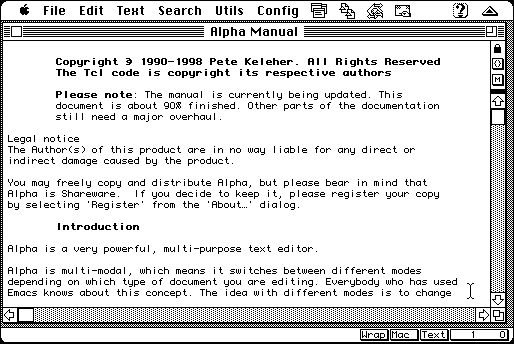

Download
AlphaLite7.2.1.zip (1.2M) AlphaLite 68k 7.2.1 repackaged into a zipped hfs disk image and checksum file. The disk image can be mounted with Mini vMac.
AlphaLite7.2.1.sit.bin (1.2M) AlphaLite 68k 7.2.1 in the original format.
copyright: Pete Keleher
mod date: May 24, 1999
license: shareware
official url :
Alpha7 (old)
"very powerful, multi-purpose text editor". scriptable in TCL.
It appears to work in System 7.5.5 in Mini vMac, though Mini vMac reports "Abnormal Situation" for reasons I haven't looked into yet. In some earlier system versions, it gives the same "Abnormal Situation" report, and then the emulated machine stops responding to mouse and keyboard events.

If you find these downloads useful, please consider helping the Gryphel Project, which hosts them.
Here are the md5 checksums for the downloads, signed with Gryphel Key 5:
--------- GRY SIGNED TEXT --------- 3113f1beac3bc85828e7d59aa95c0a8f AlphaLite7.2.1.zip 96f703f7e419eb77c83a2c5093cc1988 AlphaLite7.2.1.sit.bin ------- BEGIN GRY SIGNATURE ------- Gry/4Xa8CFcUzxdN/NvhLi7BShjYBs5DdLu4+vDRlFr6XuYmnNTAVeKGKj/PA0lw eVcKGgeguyo/bs1u8MnqZ7B6rCejbUkeF3vvIDdw5IQUHBEQM1mh4uPgQHsPFxBu zEp588ZrIuvZ0rcK35WLU6+w6cwdPn4xIaRpZrQevFy3iwE1Edl7Xr0K94Unf23p -------- END GRY SIGNATURE --------